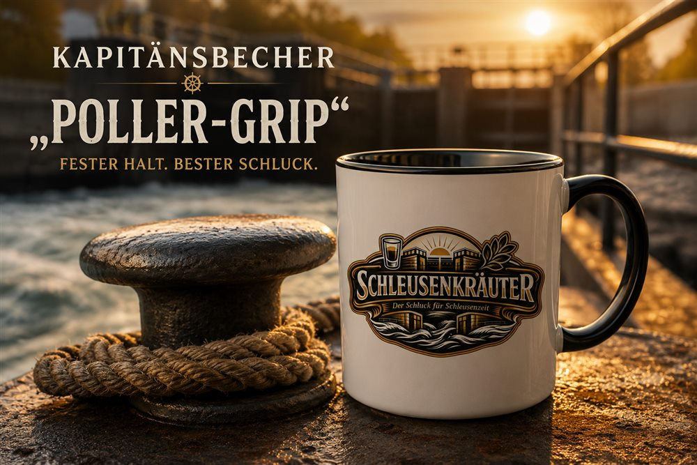
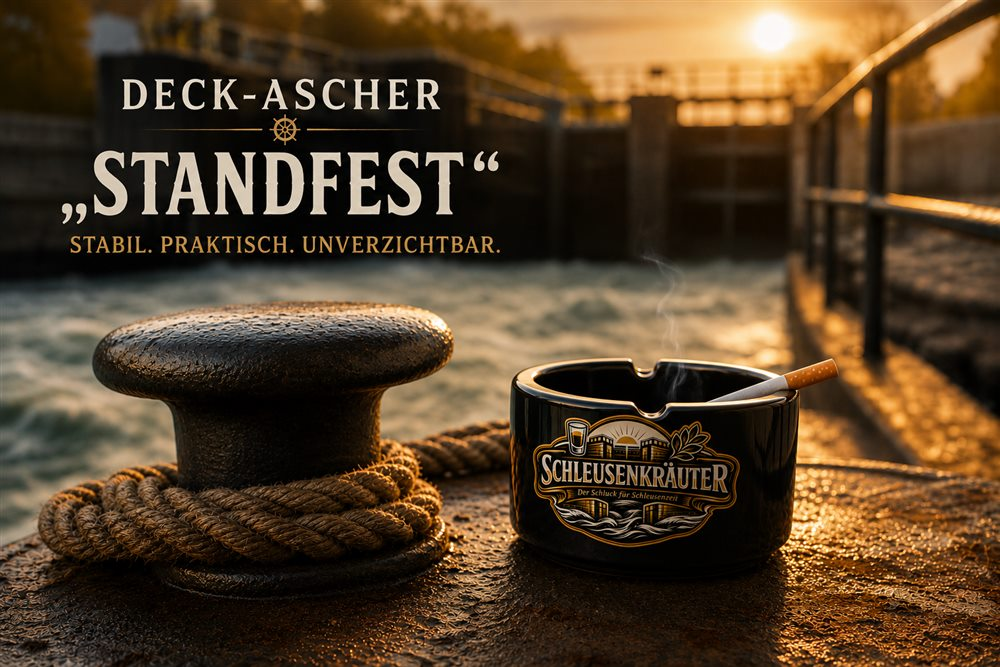
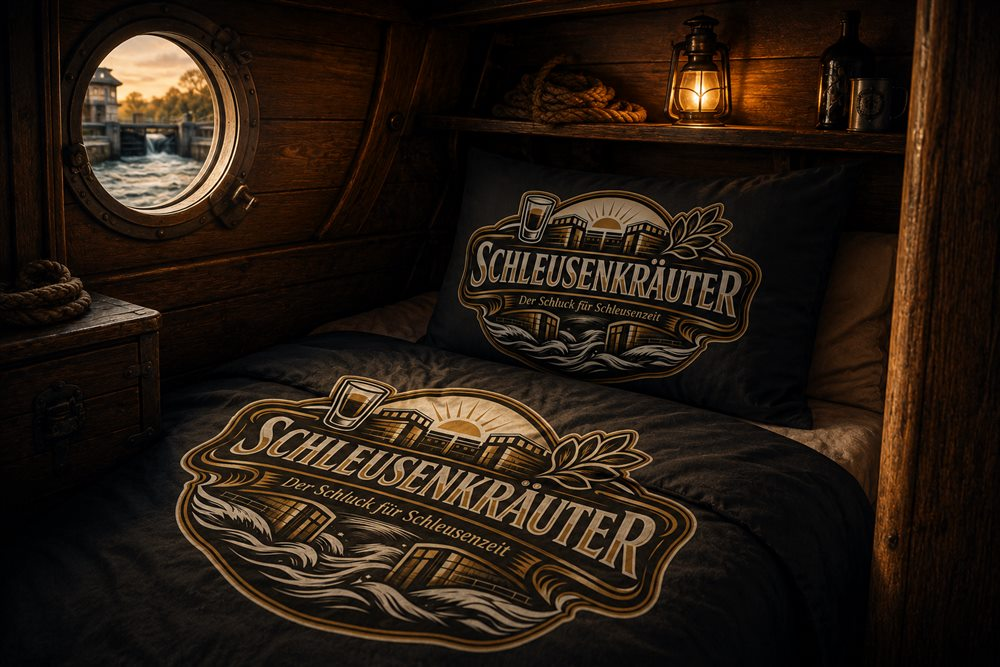
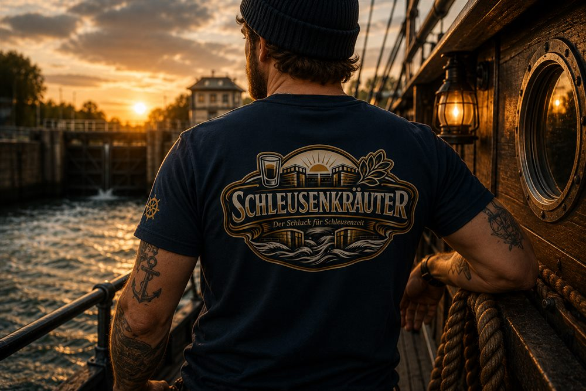
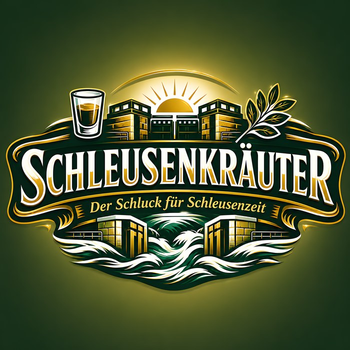

Fanshop
Offizielle Schleusenkräuter-Fanartikel. Theoretisch.
Ausverkauft

Kapitänsbecher „Poller-Grip“
12,90 € 14,90 €
Warum ausverkauft? Henrik hat beim letzten Anlegemanöver in Priepert die komplette Restauflage als Fender-Ersatz über die Bordwand gehängt. Die Tassen haben gehalten. Verkauft werden konnten sie danach nicht mehr.
Ausverkauft

Deck-Ascher „Standfest“
9,50 €
Warum ausverkauft? Till hat letztes Jahr verkündet, ab sofort nicht mehr zu rauchen. Aus Solidarität haben wir die komplette Produktion eingestellt. Wir glauben ihm zu etwa 40 %.
Ausverkauft

Kajütenbettwäsche „Tiefschlaf Backbord“
39,00 €
Warum ausverkauft? Florian hat sich nachts, mitten in einem Traum von einer Schleusung, so in seiner Bettwäsche verheddert, dass die Crew ihn am Morgen für eine Ladung Frachtgut hielt. Aus Sicherheitsgründen eingezogen.
Ausverkauft

Crew-Shirt „10 Jahre Bootstour“
19,90 €
Warum ausverkauft? Jonas hat den kompletten Karton direkt nach der Anlieferung „feierlich eingeweiht“ – mit einer offenen Flasche Schleusenkräuter. Riecht seitdem hervorragend, ist aber nicht mehr verkaufsfähig.
Ausverkauft

Schleusenwimpel „Volle Fahrt“
24,00 €
Warum ausverkauft? Lennart hat die letzte verbliebene Flagge kurzerhand zur Kapitänsmütze umfunktioniert. Sitzt erstaunlich gut, ist aber jetzt Privatbesitz und nicht verhandelbar.
Ausverkauft
Anlege-Flame Feuerzeug
4,50 €
Warum ausverkauft? Patrick hat versucht, damit den Bootsmotor „warmzumachen“. Hat nicht funktioniert, der Kapitän war not amused, und das Feuerzeug hat den Landgang nicht überlebt.
Ausverkauft
Stamperl-Set „6 an Deck“
17,90 €
Warum ausverkauft? Bei der dritten Schleuse in Folge hat die komplette Crew gleichzeitig „Prost“ gerufen. Was danach mit den Gläsern passiert ist, wird von den Beteiligten unterschiedlich erinnert.
Ausverkauft
Kapitänsmütze „Blick nach vorn“
21,50 €
Warum ausverkauft? Henrik wollte testen, ob seine Cap schwimmt. Tut sie nicht. Der Rest der Charge liegt seitdem aus Prinzip im Regal – man weiß ja nie, wer es als nächstes wissen will.
Ausverkauft

Aufkleber-Set „Bordkennung“
6,90 €
Warum ausverkauft? Till hat das gesamte Set auf sein eigenes Bier geklebt – als Diebstahlschutz gegen den Rest der Crew. Funktioniert erstaunlich gut, war aber das Ende der Lagerbestände.
Ausverkauft
Bierdeckel-Set „Poller-Rund“
5,00 €
Warum ausverkauft? Florian hat versucht, mit einem Bierdeckel eine Schleuse zu öffnen, statt die Handkurbel zu benutzen. Der Schleusenwart hat die komplette Ladung konfisziert. Zur Sicherheit, wie er sagte.
Ausverkauft
Poller-Anhänger „Fest verzurrt“
7,50 €
Warum ausverkauft? Jonas hat den Bootsschlüssel verloren und sich daraufhin an jedem einzelnen Anhänger im Laden festgehalten, „nur zur Sicherheit“. Die Anhänger waren danach emotional zu mitgenommen für den Verkauf.
Ausverkauft
Kühlschrankmagnet „Immer an Bord“
4,90 €
Warum ausverkauft? Lennart und Patrick konnten sich nicht einigen, wer den letzten Magneten an den Kühlschrank im Hafenbüro kleben darf. Der Streit läuft bis heute. Der Magnet liegt sicherheitshalber in der Vitrine.
Ihr wollt trotzdem bestellen? Kommt an Bord, bringt eigene Gläser mit und fragt einfach die Crew persönlich.